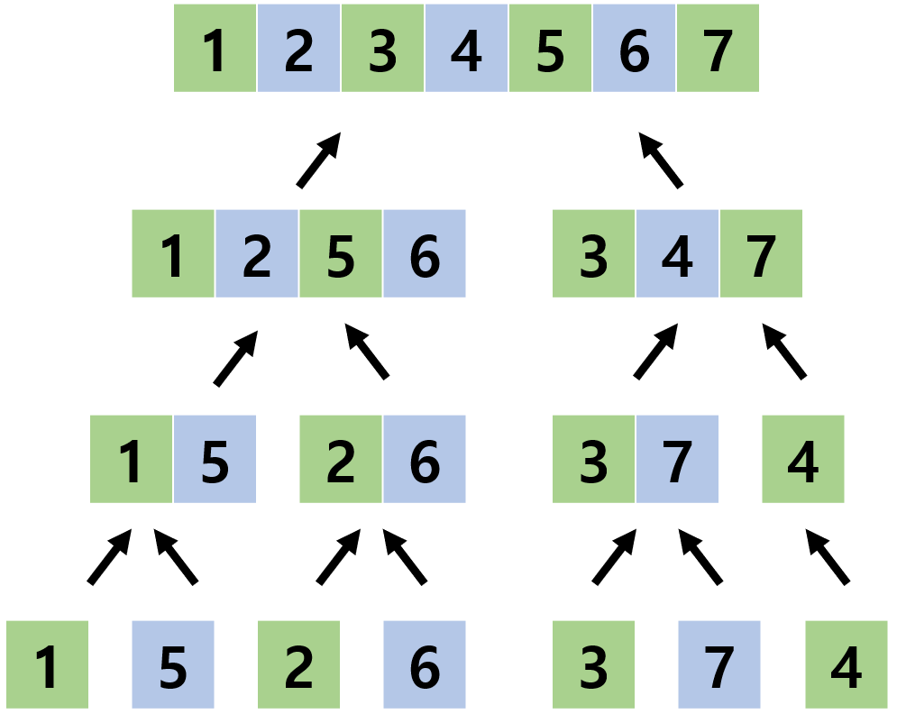

_
1. 소개
머지 소트 트리란 특수한 세그먼트 트리의 일종으로, 병합 정렬에서 정렬하는 과정이 그대로 트리의 노드에 저장된 트리를 말합니다 (세그먼트 트리, 머지 소트 참고). 다음 그림은 머지 소트 과정의 예시입니다.
머지 소트 트리는 위 과정에서 나타난 각각의 배열들을 노드로 삼아 만들어지는 트리입니다. 우리는 저 과정에서 나타난 배열들을 저장해서 새로운 트리를 만드는 것으로, 전체 수열의 부분수열에 대한 탐색을 매우 빠른 속도로 탐색할 수 있습니다. 머지 소트 트리를 만드는 것으로, 어떤 구간을 최대\(\log n\)개의 정렬된 구간으로 나타낼 수 있게 해줍니다. 위 그림의 머지 소트 과정을 활용하여 머지 소트 트리를 만든 결과는 다음과 같습니다.

가장 효율적인 정렬 알고리즘은 \(O(n\log n)\)의 시간 복잡도를 가지며, 머지 소트 역시 이런 효율적인 알고리즘중 하나입니다. 그리고 머지 소트 트리는 이런 머지 소트와 매우 유사합니다. 하나의 노드는 일반적인 세그먼트 트리와 같게 최대 두개까지의 자식 노드를 갖고, 두 노드의 배열을 합친 배열을 정렬하여 값으로 가집니다. 이런 과정을 통해 만들어진 전체 트리에서, 같은 깊이의 노드들의 배열을 전부 합치면 처음의 전체 배열에 속하는 배열이 만들어집니다. 하나의 깊이에 대해서 \(O(n)\)의 공간복잡도를 가지고, 깊이는 최대 \(\log n\)까지 존재하므로 총 \(O(n\log n)\)의 공간복잡도를 가집니다. 단순히 머지 소트에서 확인했던 노드들을 저장해두는 과정을 통해 만들어지기 때문에 머지 소트와 동일한 \(O(n\log n)\)의 시간복잡도를 가집니다.
2. 코드
머지 소트 트리를 c++코드를 통해 구현하면 아래와 같습니다.
#include<bits/stdc++.h>
using namespace std;
const int Max = 987654321;
int MST[20][150000];
int init(int layer, int i)
{
if(!layer)return 0;
init(layer-1, i*2);
init(layer-1, i*2+1);
int j, m = 1<<layer, l = i*m, r = i*m+m/2;
for(j = 0; j < m; j++)
{
if((MST[layer-1][l] < MST[layer-1][r] && l < i*m+m/2) || r == i*m+m)
MST[layer][i*m+j] = MST[layer-1][l++];
else
MST[layer][i*m+j] = MST[layer-1][r++];
}
return 0;
}
int main()
{
int i = 0, n, m, s = 0, j;
scanf("%d %d", &n, &m);
for(i = n-1; i > 0; i /= 2)s++;
for(i = 0; i < n; i++)scanf("%d", &MST[0][i]);
for(i = n; i < 1<<s; i++)MST[0][i] = Max;
init(s, 0);
return 0;
}
머지 소트 트리는 실행시간이 작지만, 그 특성상 업데이트는 시간복잡도로 인해서 커다란 의미를 가지지는 않습니다. 하나의 값을 업데이트하기 위해서는 그 값을 포함하는 \(\log n\)개의 노드를 모두 업데이트해야 하고, 업데이트에는 최대 그 노드의 길이만큼의 시간이 걸립니다. \(\log n\)개의 노드의 길이는 \(n, [n/2], ..., 1\)이므로, 그 합은 \(O(n)\)의 시간복잡도를 가지게 되어 머지 소드 트리가 아닌 일반 배열과도 시간복잡도가 같습니다.
3. 예시
그럼 이제 머지 소트 트리를 활용해서 어떤 구간에서 k번째로 작은 수를 구하는 문제를 풀어보도록 합시다. 별다른 알고리즘을 사용하지 않고, 구간을 복사해서 정렬하면 \(O(n\log n)\)의 시간복잡도만에 원하는 답을 구해낼 수 있습니다. 그리고 머지 소트 트리를 만들어서 활용하면 이보다 시간 복잡도를 많이 줄일 수 있습니다.
단순히 머지 소트 트리만을 활용한다면, 요구받은 구간을 나눈 \(\log n\)개의 정렬된 부분에서, 각 부분의 맨 앞에 있는 \(\log n\)개의 값들중 작은 값부터 빼내는 것으로 \(O(k\log n)\)의 시간복잡도를 가질 수 있습니다.
파라마트릭 서치(Parametric Search)와 이진탐색(Binary Search)를 활용하면 \(O(log^{3}n)\)의 시간복잡도를 가지고 원하는 답을 구해낼 수 있습니다. 어떤 수 k가 정해졌을 때, 요구받은 구간에서 그 수가 몇번째인지 \(O(log^{2}n)\)만에 구할 수 있습니다. 모든 부분구간들은 정렬되어 있으므로, lower bound를 활용하면 한 부분구간에 대해서 \(O(\log n)\)만에 구할 수 있습니다. 확인해야 하는 부분구간의 수는 최대 \(\log n\)개 이므로 어떤 수 k에 대해서 총 \(O(\log^{2} n)$의 시간복잡도만에 k가 주어진 구간에서 몇번째 수인지를 알 수 있으며, 파라마트릭 서치를 사용하면 전체 시간복잡도는 \(O(log^{3}n)\)이 됩니다. 위 알고리즘을 코드로 구현하면 아래와 같습니다.
#include<bits/stdc++.h>
using namespace std;
const int Max = 987654321;
int MST[20][150000];
int init(int layer, int i)
{
if(!layer)return 0;
init(layer-1, i*2); init(layer-1, i*2+1);
int j, m = 1<<layer, l = i*m, r = i*m+m/2;
for(j = 0; j < m; j++)
{
if((MST[layer-1][l] < MST[layer-1][r]
&& l < i*m+m/2) || r == i*m+m)
MST[layer][i*m+j] = MST[layer-1][l++];
else MST[layer][i*m+j] = MST[layer-1][r++];
}
}
int p(int f, int l, int L, int R, int k, int i)
{
if(l <= L)return 0;
if(f >= R)return 0;
if(f <= L && l >= R)return lower_bound(MST[i]+L, MST[i]+R, k)-MST[i]-L;
int mid = (L+R)/2;
return p(f, l, L, mid, k, i-1)+p(f, l, mid, R, k, i-1);
}
int main()
{
int i = 0, n, m, s = 0, j;
scanf("%d %d", &n, &m);
for(i = n-1; i > 0; i /= 2)s++;
for(i = 0; i < n; i++)scanf("%d", &MST[0][i]);
for(i = n; i < 1<<s; i++)MST[0][i] = Max;
init(s,0);
int a, b, c, t, f = 0, l = n-1;
scanf("%d %d %d",&a,&b,&c);a--;
while(f < l)
{
t = (f+l+1)/2;
if(p(a, b, 0, 1<<s, MST[s][t], s) < c)f = t;
else l = t-1;
}
printf("%d", MST[s][l]);
return 0;
}
파라마트릭 서치와 이진탐색등을 활용하여 \(O(\log^{3}n)\)만에 k번째 수를 찾아내는 방법에 대해서 이야기했지만, 이것이 이 프로그램 전체의 시간복잡도는 아니라는 점을 유의해야 합니다. 처음 프로그램을 실행하였을 때에 \(O(\log n)\)의 시간복잡도를 가지고 머지 소트 트리를 만들어야 해서 전체의 시간복잡도는 \(O(n\log n+\log^{3}n)\)이 됩니다.
여기까지만 본다면 머지 소트 트리를 활용하는 이유에 대한 의문이 들 수도 있겠지만, 이런 쿼리를 여러개 처리해야만 한다면 커다란 차이가 발생하게 됩니다. 단순히 정렬을 한다면 매번 새로 정렬을 해야 해서 m개의 쿼리를 처리하는데에 \(O(mn\log n)\)의 시간이 들지만, 머지 소트 트리의 경우에는 처음에 트리를 만들고 나서부터는 \(O(\log^{3}n)\)의 시간복잡도를 가져 총 \(O(n\log n+m\log^{3}n)\)의 시간복잡도를 가지게 됩니다. 이런 상황에서는 둘의 실행시간 차이가 꽤 많이 발생합니다.
같은 머지 소트 트리라도 조금씩 차이가 존재 할 수도 있습니다. 위에 나와있는 예시 코드처럼 머지 소트를 직접 구현하면서 트리를 만들 수도 있지만, \(\log n\)개의 노드를 c++ 내장 함수를 활용하여 하나하나 정렬하는 방식으로 훨씬 편리하게 \(O(n\log^{2}n)\)만에 트리를 만드는 것도 가능하고, set등을 활용하여 업데이트가 가능하게 할 수도 있습니다. 머지 소트 트리를 이해한 후에는 직접 응용할 방법에 대해서 생각해 보도록 합시다.